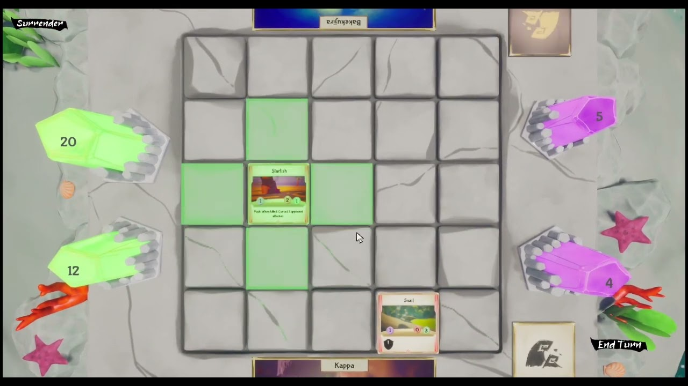

Le Yokai no Kake mélange jeu de cartes et jeu de plateau en opposant 2 joueurs sur un échiquier de 5 cases par 5.
Chaque joueur va incarner un Yokai.
Il y a 2 manières de gagner une partie :
- Faire tomber les PV du Yokai adverse à 0.
- Occuper la zone d’influence adverse pendant 3 tours avec plus d’unités.